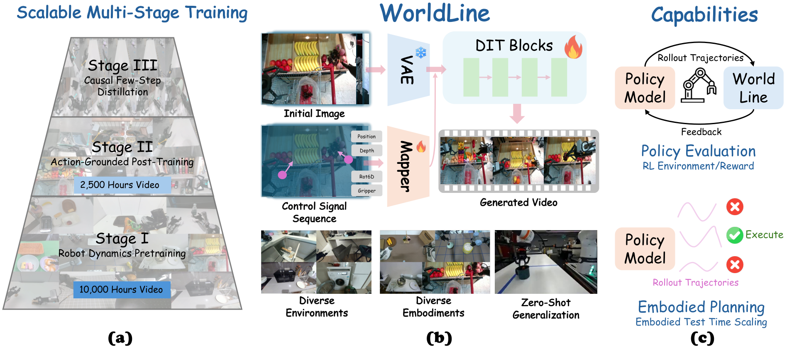

WORLDLINE AT A GLANCE
Overview

WorldLine is an action-driven visual simulator for predicting robot manipulation before physical execution. It separates transferable dynamics learning from action grounding: broad action-free robot video teaches how robots and objects interact, while calibrated action trajectories connect those dynamics to each robot’s controls.
An image-space action representation provides a shared interface across embodiments. Multi-view and failure-enriched training, relational regularization, and robot-focused few-step distillation improve interaction-sensitive prediction and efficient causal rollout—supporting policy evaluation and embodied planning.
PERFORMANCE AT A GLANCE
Scale, fidelity, and downstream utility
Key figures reported in the paper across training data, held-out evaluation, and out-of-domain planning.
THE WORLDLINE APPROACH
How WorldLine works
WorldLine combines transferable manipulation dynamics learned from large-scale robot video with an image-space action interface that grounds controls across embodiments.
Pretrain on robot dynamics
Adapt a video model on more than 10,000 hours of action-free robot video. It learns how robots and objects move and interact before receiving control supervision.
TRANSFERABLE DYNAMICS PRIORGround actions in image space
Project each robot’s end-effector position, depth, orientation, and gripper state into calibrated camera views. These spatial action maps give different embodiments a shared visual control interface.
2,000+ HOURS · 10+ EMBODIMENTSRoll out futures causally
Distill the simulator into a block-autoregressive model that accepts updated actions as it predicts. Four denoising steps generate each block, keeping rollouts practical for interactive use.
4-STEP · ONLINE-ACTION ROLLOUTOne action language across robots
Native controls differ in dimensions and coordinate systems. WorldLine uses robot kinematics and camera calibration to express them as aligned spatial maps, preserving where and how the robot is expected to move.
Train for interaction, not appearance alone
Synchronized head and wrist views, failure trajectories, and relational regularization teach the model to preserve robot–object interactions across time and viewpoints—not just plausible backgrounds.